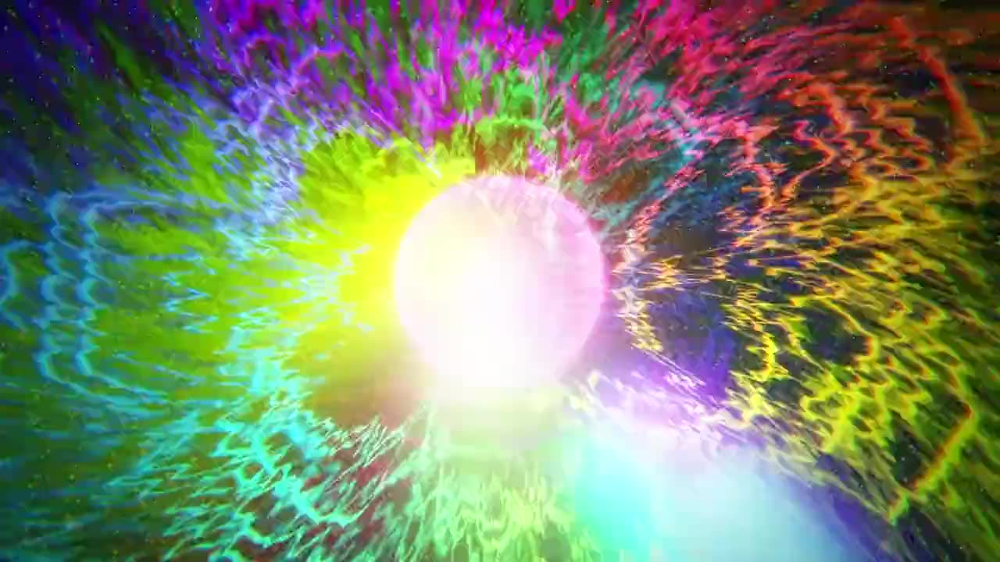

Free · Windows · macOS · Linux · Browser
Your music, melted into light.
A psychedelic music visualizer in the spirit of the old iTunes and Windows Media Player visualizers, with a lot more going on. Ten scenes that breathe with the bass, flash on the beat and drift on the melody.
No install needed for the browser version. Drop in a song or use the built-in demo track.
Ten scenes. Endless variations.
Every scene is a set of layers feeding back into each other, so no two moments look the same. Prismatica cross-fades to the next scene on a beat, or lock the one you love.
Press 1–0 to jump straight to a scene.
Built to sit on your screen for hours.
Listen to anything
Open your music files or start the built-in demo track. The desktop app can also capture whatever your computer is playing, or a microphone or line-in.
Reacts to every beat
Bass, mids and highs each drive their own layers, and beat detection fires shockwaves and scene changes in time with the music.
Synced lyrics
Line-by-line lyrics from .lrc files, embedded tags or LRCLIB, tucked into a corner so they never take over the picture.
Fullscreen, distraction-free
Double-click for fullscreen. The controls and cursor disappear after a few seconds of stillness.
Keyboard friendly
Space to play, arrows for scenes, Y for lyrics, F for fullscreen, comma for settings. Press ? for the full list.
Lyrics
Sing along without leaving the trip.
Synced lyrics sit quietly in the corner and light up line by line. Prismatica finds them in a .lrc file next to your song, in the file's own tags, or online through LRCLIB.
- Search by hand when a song isn't matched automatically
- Nudge the timing with [ and ], remembered per song
- Toggle with Y, or turn off online lookup entirely
Make it yours
Out of the way until you need it.
The controls fade out when you stop moving the mouse. A small settings menu picks how often scenes change, whether their names pop up, lyrics, and render quality. Everything is remembered.
Put something on. Turn the lights off.
Free for Windows, macOS and Linux, or right in your browser.